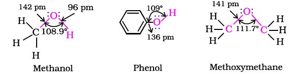
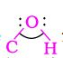

In alcohols, the oxygen of the –OH group is attached to carbon by a sigma (s ) bond formed by the overlap of a sp3 hybridised orbital of carbon with a sp3 hybridised orbital of oxygen. Fig. 11.1 depicts structural aspects of methanol, phenol and methoxymethane.

Fig. 11.1: Structures of methanol, phenol and methoxymethane
The bond angle  in alcohols is slightly less than the tetrahedral angle (109°-28¢). It is due to the repulsion between the unshared electron pairs of oxygen. In phenols, the –OH group is attached to sp2 hybridised carbon of an aromatic ring. The carbon– oxygen bond length (136 pm) in phenol is slightly less than that in methanol. This is due to (i) partial double bond character on account of the conjugation of unshared electron pair of oxygen with the aromatic ring (Section 11.4.4) and
(ii) sp2 hybridised state of carbon to which oxygen is attached.
In ethers, the four electron pairs, i.e., the two bond pairs and two lone pairs of electrons on oxygen are arranged approximately in a tetrahedral arrangement. The bond angle is slightly greater than the tetrahedral angle due to the repulsive interaction between the two bulky (–R) groups. The C–O bond length (141 pm) is almost the same as in alcohols.